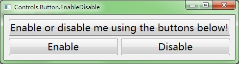
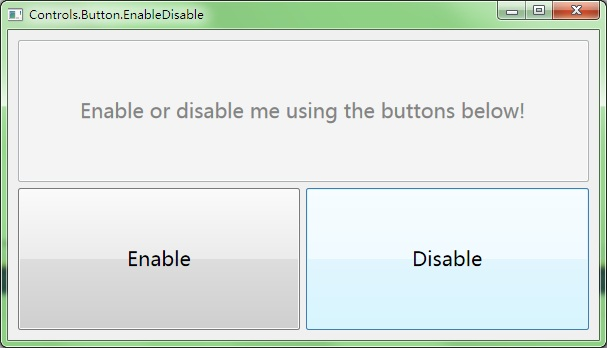

Button.EnableDisable


#include "..\..\Public\Source\GacUIIncludes.h"
#include <Windows.h>
int CALLBACK WinMain(HINSTANCE hInstance, HINSTANCE hPrevInstance, LPSTR lpCmdLine, int CmdShow)
{
return SetupWindowsDirect2DRenderer();
}
class EnableDisableWindow : public GuiWindow
{
private:
GuiButton* buttonTarget;
GuiButton* buttonEnable;
GuiButton* buttonDisable;
void buttonEnable_OnClick(GuiGraphicsComposition* sender, GuiEventArgs& arguments)
{
buttonTarget->SetEnabled(true);
}
void buttonDisable_OnClick(GuiGraphicsComposition* sender, GuiEventArgs& arguments)
{
buttonTarget->SetEnabled(false);
}
public:
EnableDisableWindow()
:GuiWindow(GetCurrentTheme()->CreateWindowStyle())
{
this->SetText(L"Controls.Button.EnableDisable");
// limit the size that the window should always show the whole content without cliping it
this->GetContainerComposition()->SetMinSizeLimitation(GuiGraphicsComposition::LimitToElementAndChildren);
// create a table to layout the 3 buttons
GuiTableComposition* table=new GuiTableComposition;
// make the table to have 2 rows
table->SetRowsAndColumns(2, 2);
table->SetRowOption(0, GuiCellOption::PercentageOption(0.5));
table->SetRowOption(1, GuiCellOption::PercentageOption(0.5));
table->SetColumnOption(0, GuiCellOption::PercentageOption(0.5));
table->SetColumnOption(1, GuiCellOption::PercentageOption(0.5));
// dock the table to fill the window
table->SetAlignmentToParent(Margin(4, 4, 4, 4));
table->SetCellPadding(6);
// add the table to the window;
this->GetContainerComposition()->AddChild(table);
// add the target button
{
GuiCellComposition* cell=new GuiCellComposition;
table->AddChild(cell);
// this cell is the top cell
cell->SetSite(0, 0, 1, 2);
buttonTarget=g::NewButton();
buttonTarget->SetText(L"Enable or disable me using the buttons below!");
// dock the button to fill the cell
buttonTarget->GetBoundsComposition()->SetAlignmentToParent(Margin(0, 0, 0, 0));
// add the button to the cell
cell->AddChild(buttonTarget->GetBoundsComposition());
}
// add the enable button
{
GuiCellComposition* cell=new GuiCellComposition;
table->AddChild(cell);
// this cell is the bottom left cell
cell->SetSite(1, 0, 1, 1);
buttonEnable=g::NewButton();
buttonEnable->SetText(L"Enable");
buttonEnable->GetBoundsComposition()->SetMinSizeLimitation(GuiGraphicsComposition::LimitToElementAndChildren);
buttonEnable->GetBoundsComposition()->SetAlignmentToParent(Margin(0, 0, 0, 0));
buttonEnable->Clicked.AttachMethod(this, &EnableDisableWindow::buttonEnable_OnClick);
cell->AddChild(buttonEnable->GetBoundsComposition());
}
// add the disable button
{
GuiCellComposition* cell=new GuiCellComposition;
table->AddChild(cell);
// this cell is the bottom right cell
cell->SetSite(1, 1, 1, 1);
buttonDisable=g::NewButton();
buttonDisable->SetText(L"Disable");
buttonDisable->GetBoundsComposition()->SetMinSizeLimitation(GuiGraphicsComposition::LimitToElementAndChildren);
buttonDisable->GetBoundsComposition()->SetAlignmentToParent(Margin(0, 0, 0, 0));
buttonDisable->Clicked.AttachMethod(this, &EnableDisableWindow::buttonDisable_OnClick);
cell->AddChild(buttonDisable->GetBoundsComposition());
}
// change the button font
{
FontProperties font;
font=buttonTarget->GetFont();
font.size=20;
buttonTarget->SetFont(font);
buttonEnable->SetFont(font);
buttonDisable->SetFont(font);
}
// call this to calculate the size immediately if any indirect content in the table changes
// so that the window can calcaulte its correct size before calling the MoveToScreenCenter()
this->ForceCalculateSizeImmediately();
// move to the screen center
this->MoveToScreenCenter();
}
~EnableDisableWindow()
{
}
};
void GuiMain()
{
GuiWindow* window=new EnableDisableWindow();
GetApplication()->Run(window);
delete window;
}
|